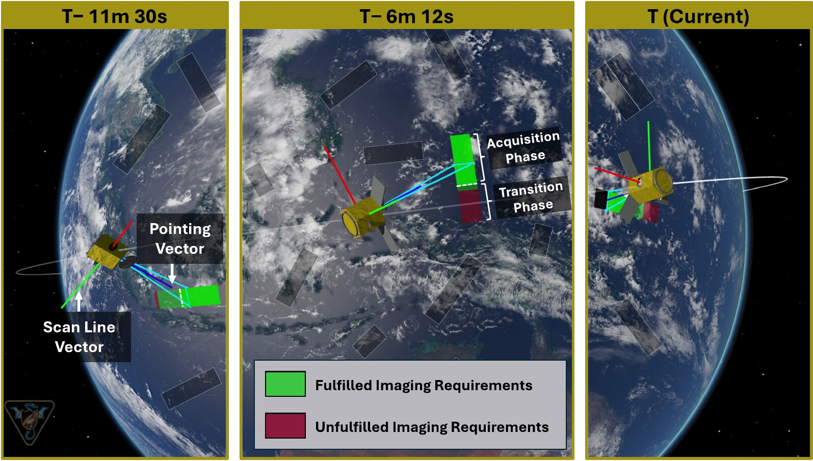
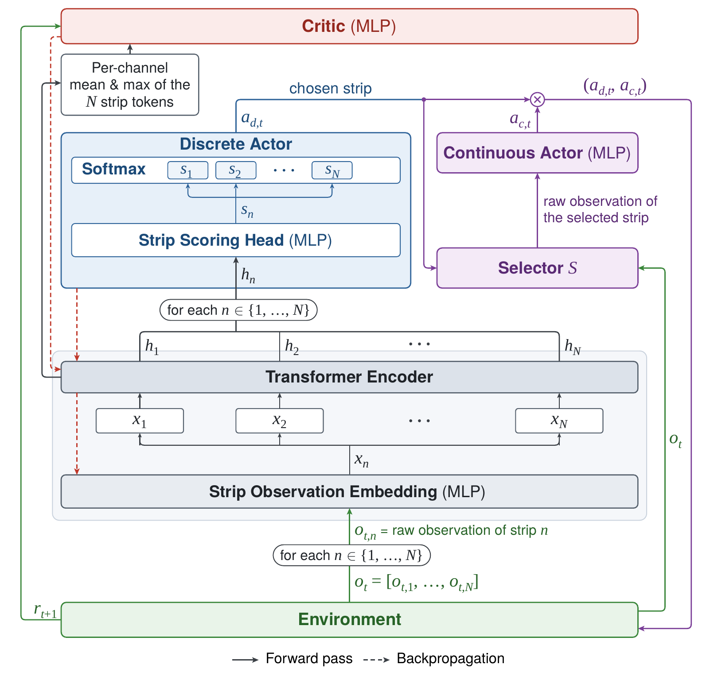
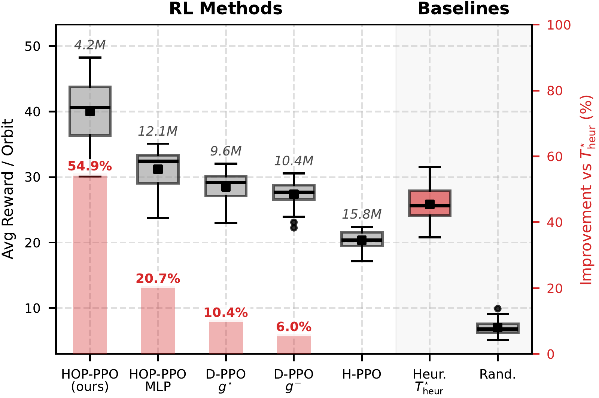

Earth-observing satellites usually receive their task plan from the ground: an optimizer computes it, and the satellite executes it open loop. Every new request or change of conditions forces a new plan on the ground. Reinforcement learning instead trains a policy offline in a high-fidelity simulator and runs it on board, where it maps the current observation to the next decision in milliseconds. Previous RL schedulers handled the imaging of discrete points with simple multilayer perceptrons (MLPs). This work extends RL to strip imaging, where a line camera scans a long strip of ground at a prescribed speed.
The scheduler must choose the next strip and the transition time before its acquisition starts: long enough for the attitude to settle and the strip to come into view, short enough not to waste the pass. We propose HOP-PPO, an autoregressive hybrid-action PPO whose discrete actor picks the strip and whose continuous actor then picks its transition time, on top of a transformer encoder with one token per strip. Over 100 missions of 24 hours, it earns 54.9% more reward per orbit than a tuned heuristic, and 28.3% more than the same policy with an MLP encoder, which has three times more parameters.
Each request is a strip with a start point, an end point, a priority and a required acquisition speed.
To simulate it in Basilisk, we developed a stripLocation module, which moves a target point along the strip at the acquisition speed, and a strip imaging mode of the locationPointing module, which keeps the boresight on that point and the scan line perpendicular to the scanning direction.
Two requirements must hold during the whole acquisition: the attitude error stays below a bound, and the satellite stays above a minimum elevation seen from the target point.
A transition phase before each acquisition absorbs both the wait for the strip to come into view and the transient of the attitude controller.

The scheduling problem is a partially observable semi-Markov decision process: each decision lasts as long as the transition and the acquisition it starts. The agent observes the next N strips, ordered by the closing time of their imaging windows: their priority, geometry, acquisition speed, the attitude error it would start with, and the opening and closing times of their next window.
Its action is hybrid: one of the N strips (discrete) and a transition time between 0 and 120 s (continuous). The reward is the priority of each strip imaged for the first time. The environment is built with BSK-RL, our open-source package of Gymnasium environments for spacecraft tasking on top of Basilisk.


Each policy is evaluated on 100 missions of 24 hours (15 orbits) in a 600 km, 45° orbit, with 2,000 to 5,000 random strips of 100 to 500 km. The heuristic picks, among the strips reachable after a fixed transition time, the one with the highest priority per second; the best fixed time, 80 s, is used.
| Policy | Parameters | vs heuristic |
|---|---|---|
| HOP-PPO (transformer) | 4.2 M | +54.9% |
| HOP-PPO, MLP encoder | 12.1 M | +20.7% |
| Discrete PPO, best grid | 9.6 M | +10.4% |
| Discrete PPO, finest grid | 10.4 M | +6.0% |
| H-PPO | 15.8 M | −21% |
The transformer gains 28.3% over the MLP encoder with three times fewer parameters. Discretizing the transition time grows the action space and helps less, and the generic hybrid PPO, which is not autoregressive, does worse than the heuristic. In the earlier conference version, HOP-PPO outperformed the heuristic by 36.3% and the discretized and generic hybrid methods by at least 25.9%.